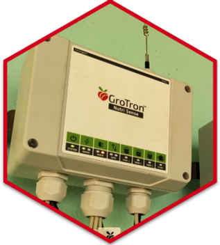

GoTron CROPSENSE
- Senses soil moisture and temperature
- Operates gate valves automatically and irrigates when required
- Maintains ideal soil moisture for superior plant productivity


GoTron WATERSENSE
- Automatic operation of water pumps based on real-time soil conditions
- Prevents motor dry run
- Operates Genset automatically when grid power is not available
GroTron NUTRISENSE
- Manages fertigation of multiple crops in a farm
- Supplies precise nutrition based on a crop specific fertigation plan
- Automatic operation of fertigation unit and tanks
- Auto cleaning of tanks and flushing of pipelines


GroTron CLIMATESENSE
- Monitors protected cultivation environment structures for ideal temperature and humidity
- Operates fogger automatically to maintain ideal environment